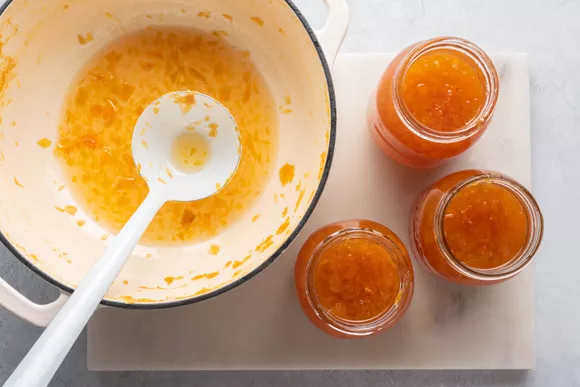

Marmalade and Red Onion Soup

Description
Dark and with the rich taste of a demi-glace, this sweet-sour and intensely onion soup lingers on the tongue like a fine wine. Its flavor is really too assertive for a first course, but it makes an excellent lunch with half a sandwich, or a dinner with crusty bread, salad, and the rest of that red wine. Many thanks to "Anon." for sending in this superb recipe. Serve hot to 4-6 people.
Ingredients
3 Tablespoons olive oil
5 pounds red onions, sliced as paper thin as possible to make the marmalade almost syrupy
½ cup red wine vinegar
¾ cup red wine
8 cups beef stock
4 cups chicken stock
salt and pepper
flavoring bundle of a celery stalk, bay leaf, and parsley stems tied together
Steps
In a large soup pot, heat the olive oil, then stir in the onions--and there are LOTS of them.
Sauté, stirring frequently, until the onions are completely wilted and turning nicely brown, almost like an onion marmalade
This takes a long time, some 20 minutes or so, and they will cook down a lot. Stir in the vinegar, and cook it down until it is mostly evaporated.
This is key--you don't want to add the wine until the vinegar is really cooked down. Stir in the wine, and let cook it down quite a bit
Finally, stir in the beef stock and chicken stock and bring to a boil. Add the celery bundle, salt, and pepper, then reduce heat and simmer for 15 minutes or so, to mix flavors.